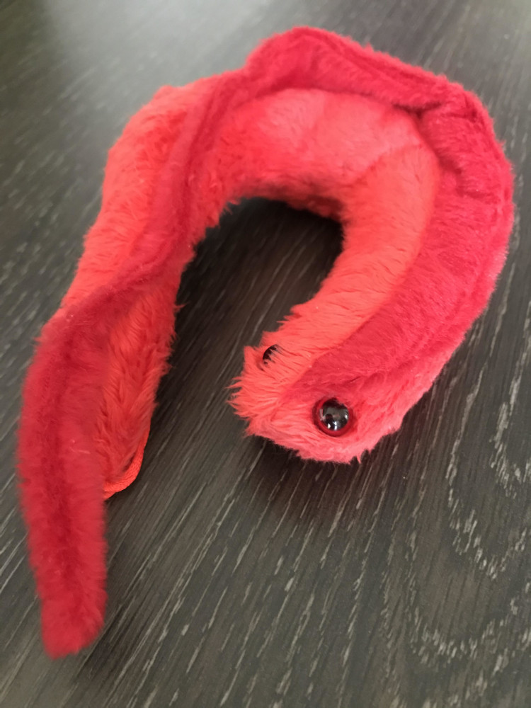

Stochastic models of DNA replication programming in trypanosomatids

Trypanosomatids are protozoan that bear a peculiar genomic topology, with genes organized into polycistrons and constitutive transcription along the whole cell cycle. Given those properties, one hypothesis is that conflicts between DNA replication and transcription machineries contribute for the firing of replication origins along the cell cycle S phase in those organisms. In fact, based on a DNA replication model proposed for human cells, we developed a DNA replication stochastic dynamic model for
Trypanosoma brucei that was calibrated with published MFA-seq data and used it to predict that increasing constitutive transcription levels indeed incur in an increase of fired origins; however, such increase has little impact on the overall S phase duration (
da Silva et al., 2019). Those predictions were validated experimentally in alpha-amanitin-based transcription inhibition assays (
da Silva et al., 2019). Nevertheless, the aforementioned hypothesis was not explored in other trypanosomatids, especially in
T. cruzi. Recently, Dr. Maria Carolina Elias' group concluded the DNA origins mapping for
T. cruzi through MFA-seq assays. Those assays unveiled that several origins are located in coding regions of the dispersed gene family 1 (DFG-1) genes, a gene family relevant for the parasite life cycle. Once DFG-1 genes have high genetic variability, one possibility is that conflicts between DNA replication and transcription machineries are responsible for the verified genetic variability. If this latter assumption is correct, one corollary is that the origin firing distribution in
T. cruzi is conditioned by the parasite's own genomic organization. Therefore, through a combination of dry and wet lab assays, we seek in this project to answer the following questions:
- Do conflicts between DNA replication and transcription machineries induce increased origin firing in T. cruzi?
- Is the origin firing distribution in T. cruzi conditioned by the genomic organization?
Apart from the resolution of the aforementioned questions, we aim with this project to improve computational dynamic models of the DNA replication programming. We also expect theoretical advances (e.g., closed solutions of stochastic processes that describe DNA replication dynamics in trypanosomatids), which would be derived through analyses of computational assays.